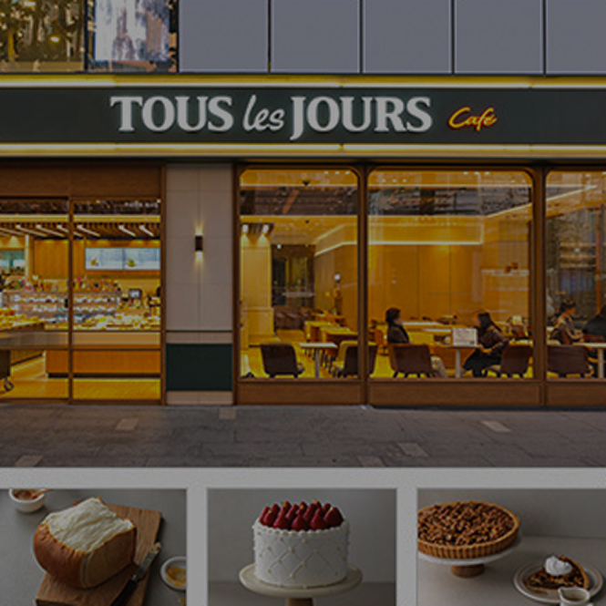
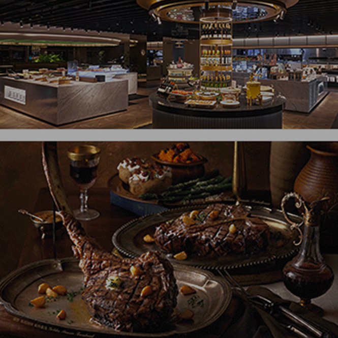
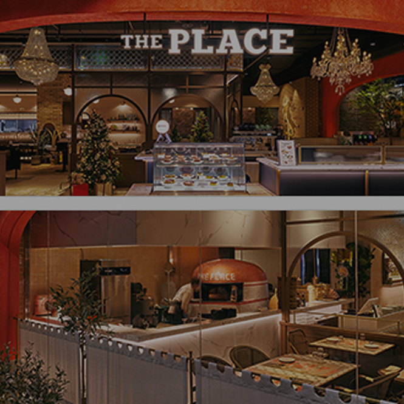
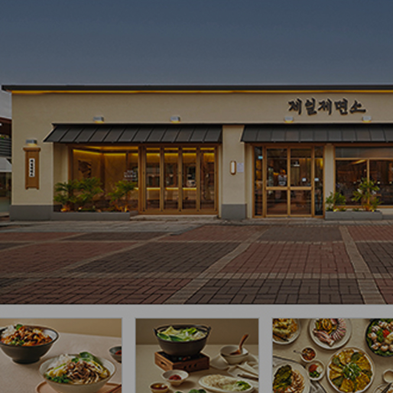
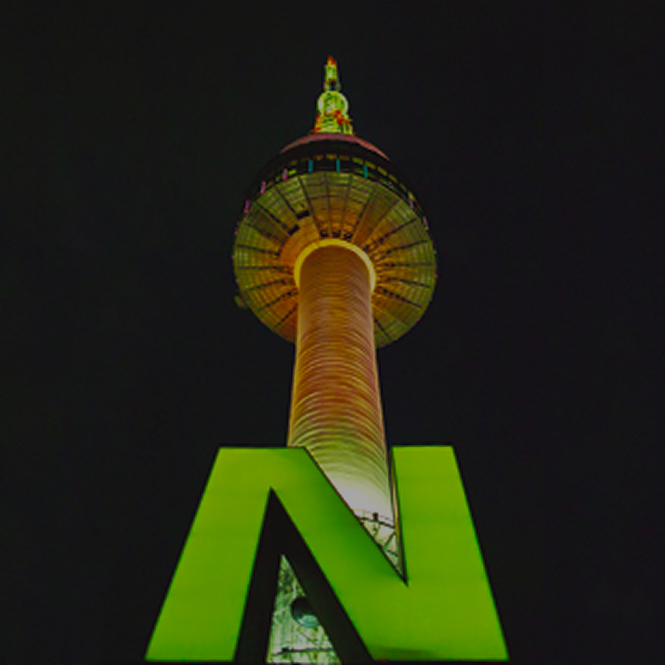
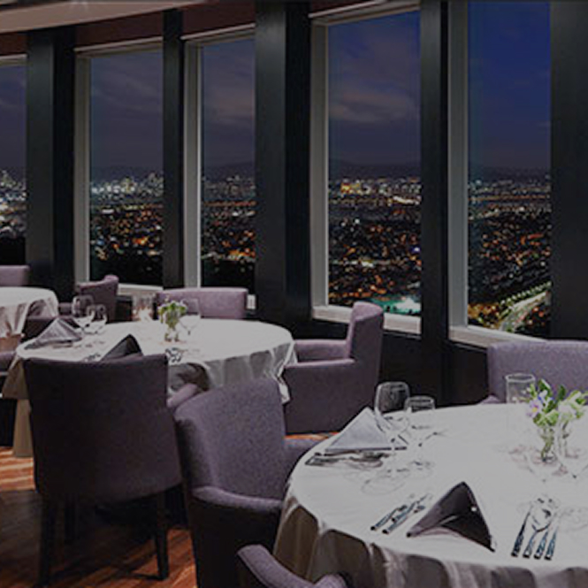

고객과 함께 성장하는 기업,
지속 가능한 미래
CJ푸드빌은 정직한 맛과 서비스로 고객과의 신뢰를 쌓고,
지속 가능한 글로벌 성장을 추구합니다.
브랜드 소개
정성이 모여 가치를
만듭니다.
-

뚜레쥬르
뚜레쥬르(프랑스어로 '매일 매일(Everyday)'이라는 뜻)는 날마다 매장에서 직접 구운 건강한 빵과 신선한 케이크를 선보이는 프리미엄 베이커리 브랜드입니다.
자세히 보기 -

빕스
빕스는 고급 스테이크 하우스에서만 맛볼 수 있던 프리미엄 스테이크와 계절마다 변하는 다채롭고 신선한 샐러드바로 국내 외식 업계를 선도해왔습니다.
자세히 보기 -

더플레이스
카푸토 밀가루를 비롯한 이탈리아산 식재로 매일 직접 도우를 반죽, 발효한 뒤 화덕에서 바로 구워내는 정통 나폴리 스타일 화덕피자부터 파스타와 이탈리안 스테이크까지,
자세히 보기 -

제일제면소
제일제면소만의 비법을 더해 특색있는 육수와 풍성한 식감이 살아있는 고명으로 든든함을 채워 지친 마음까지 위로해주는 별미국수 한 그릇과 입맛을 돋우는 별미요리를 즐길 수 있습니다.
자세히 보기 -

N서울타워
서울 중심에 자리한 해발 480m 전망의 N서울타워는 남산의 자연과 전망 그리고 F&B, 엔터테인먼트, 쇼핑 등 CJ그룹의 역량이 조화롭게 어우러진 복합문화공간입니다.
자세히 보기 -

엔그릴
N서울타워에서도 가장 높은 자리에 위치한 엔그릴은 서울의 전경을 360도로 즐길 수 있는 국내 유일의 레스토랑입니다. 클래식한 프렌치 코스 요리와 함께 보석 같은 야경을 바라보며 잊지 못할 시간을 즐길 수 있습니다.
자세히 보기